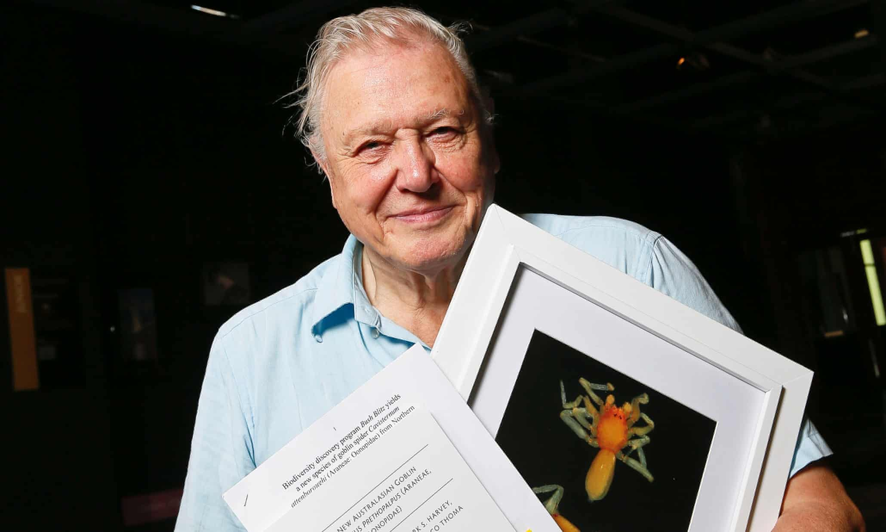

Sir David Attenborough
A Naturalist and Pioneer
Sir David Attenborough continues inspired millions by bringing nature into our homes. His dedication to exploration, curiousity, innovation, and a drive to enlighten has shaped our lives and understanding of the natural world. He has changed our connection to the natural world but also how we are able to view the natural world.
Highlights David Attenborough's Career
- 1926 - Born in London, England
- 1936 - Attended a lecture by Grey Owl (Archibald Belaney) at De Montfold Hall, Leicaster. Attenborough was highly influenced by Grey Owl's advocacy of conservation.
- 1945 - Won a scholarship to Clare College, Cambridge to study geology and zoology. He obtained a degree in natural sciences.
- 1947 - Began national service with the Royal Navy. He was stationed in North Wales and the Firth of Forth.
- 1952 - Completed a training program at the British Broadcasting Corporation (BBC) and became a television producer for the BBC.
- 1954 - Along with reptile curator, Jack Lester, originated the television series, Zoo Quest. The program featured live animals filmed in the wild and in zoos. He famously recorded the Komodo Dragon on film for the first time. Zoo Quest was highly popular and helped expand the scope of educational programming offered on the BBC.
- 1965 - Became Controller of BBC Tow and oversaw the first ever color broadcasts in Europe. While acting as Controller, he commissioned the crictically-acclaimed series Civilisation, The Ascent of Man, and Monty Python's Flying Circus.
- 1973 - Attenborough quits his job at the BBC to begin work as a freelance broadcaster. During this time, he writes and presents his first natural history epic Eastwards with Attenborough.
- 1979 - The award-winning anthropology and natural history Life series debuts with Life on Earth. Attenborough conducted extensive research on the latest discoveries and took the subject seriously, thus gaining the trust of scientists in various fields. They allowed Attenborough to feature their work in the Life series. His film crew devised new film-making techiques to capture the necessary shots. This led to filming events and animals that up until the late 1970's were previously unfilmed.
- 1984 - The Living Planet debuts on the BBC.
- 1985 - Knighted by Queen Elizabeth II in recognition of his services to televison.
- 1995 - Attenborough writes and presents The Secret Life of Plants. The series utilies time-lapse sequences in order to grant insights that would otherwise be almot impossible. The Secret Life of Plants helped to redefine plants as dynamic organisms and went on to earn a Peabody Award.
- 2001 - The "first ever comprehensive series on the natural history of the world's oceans," The Blue Planet debuts. Several species, including the hairy angler fish and the Dumbo octopus, were captured on film for the first time. The Blue Planettook over five years to complete and was filmed in nearly 200 locations.
- 2007 - The carnivorous Attenborough's pitcher plant (Nepenthes attenboroughii) is discovered by Alastair Robinson, Stewart R. McPherson, and Volker B. Heinrich. Attenborough is fond of pitcher plants, which led the scientists to honor him in their discovery. There are at least 20 species and genera, both living and extinct, that have been named in Attenborough's honor.
- 2020 - Knighted for a second time by Queen Elizabeth II. He was appointed a Knight Grand Cross of the Order of St. Michael and St. George for services to television broadcasting and conservation.

David Attenborough at the 2012 naming ceremony for the new spider species, Prethopalpus attenboroughi.